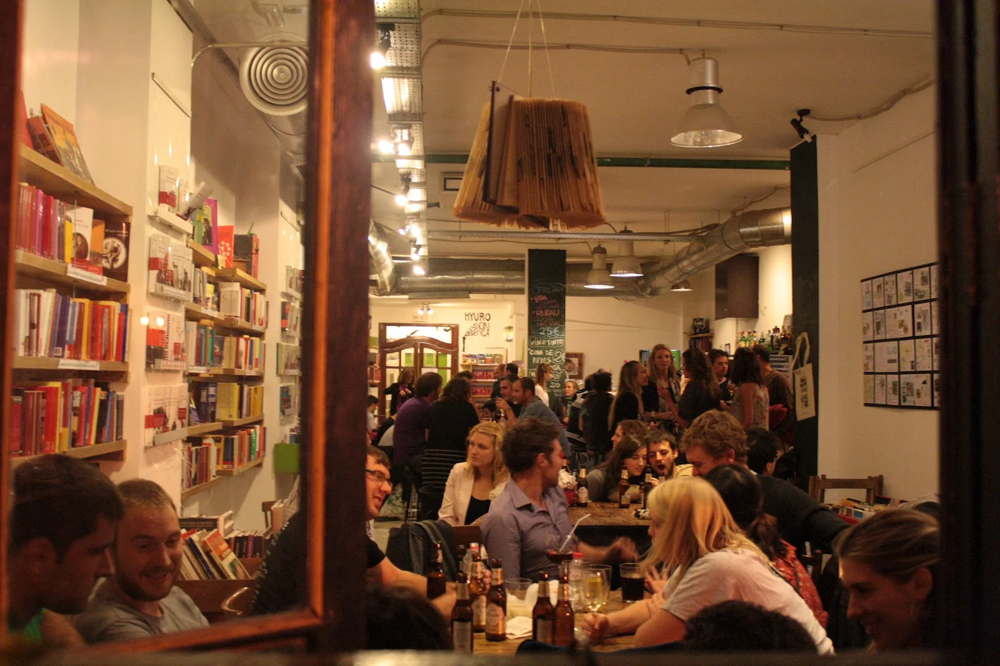
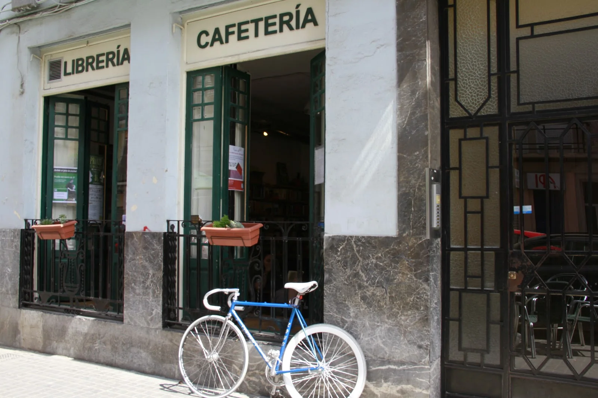
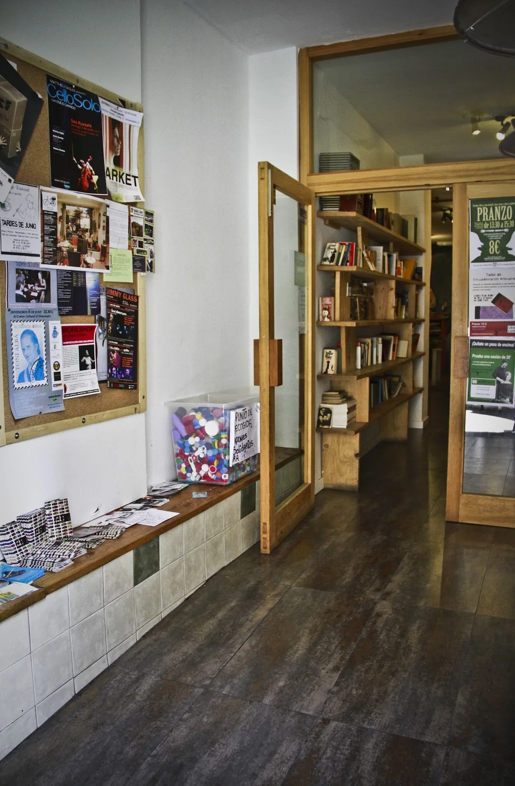
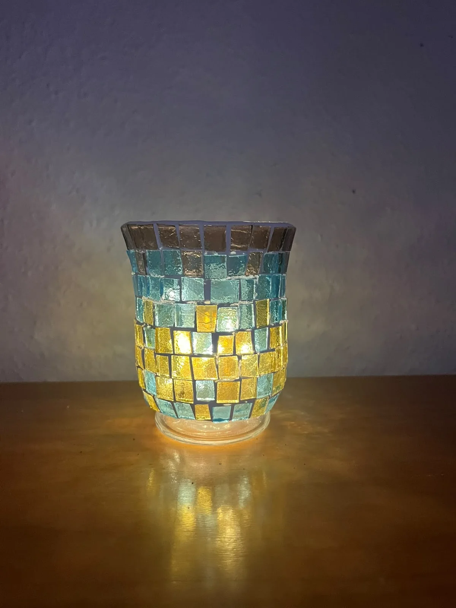

Café y cocina
Desayunos, brunch y platos con opciones veganas y vegetarianas. La carta publicada reúne comida y bebidas.
Ruzafa, València
Libros, café y cultura en Ruzafa. Un espacio para sentarse, descubrir y dejar que la conversación siga.

Un lugar con identidad
Ubik reúne librería y cafetería en la calle Literato Azorín. Libros nuevos y de segunda mano conviven con desayunos, platos y una programación de exposiciones, conciertos y encuentros.
Consulta la carta y la agenda publicadas por el local. Para reservar o confirmar los horarios de tu visita, llama directamente a Ubik.
Los canales del local ↗A tu manera
Librería · Cafetería · Cultura. Ruzafa, València.
Desayunos, brunch y platos con opciones veganas y vegetarianas. La carta publicada reúne comida y bebidas.
Una librería con títulos nuevos y una sección de segunda mano, integrada en la vida de la cafetería.
Exposiciones, conciertos, club de lectura y otros encuentros. La agenda se consulta en los canales de Ubik.
Una mirada al lugar
El espacio y los detalles publicados por Ubik: la cafetería, la entrada y su actividad cultural.



Todo a mano
Consulta la información publicada por el establecimiento en sus canales.
Nos vemos aquí
Abre la carta, consulta la agenda y encuentra el momento de venir.
Llamar a UbikConsulta los horarios actualizados con el local.